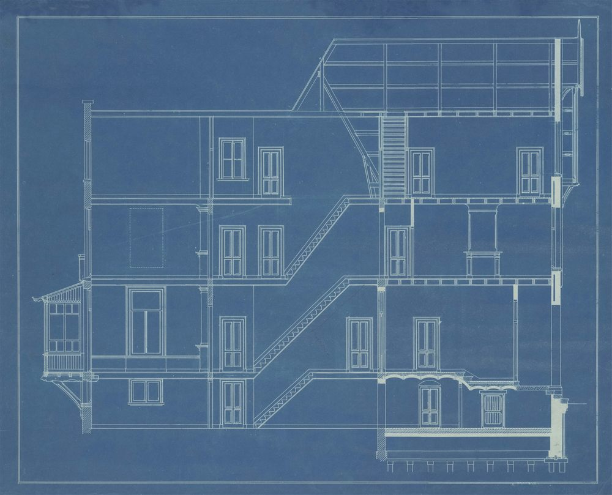
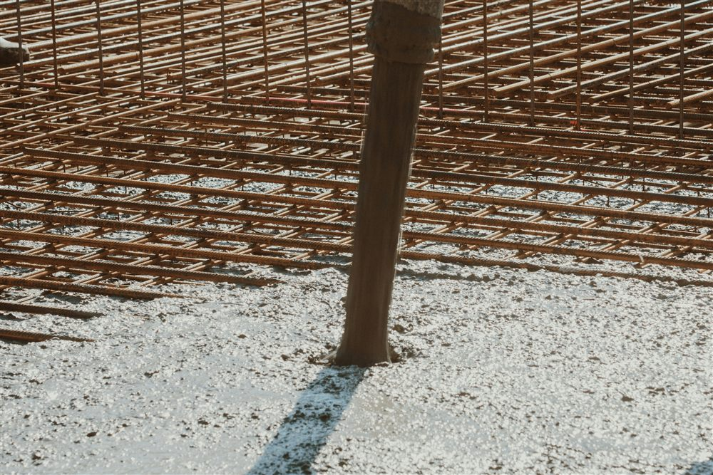

Deux méthodes pour un même objectif
La réglementation parasismique française poursuit un objectif unique : que les constructions résistent à un séisme de référence sans s'effondrer, afin de protéger les personnes. Pour l'atteindre sur le bâti à risque normal, le législateur a prévu deux chemins.
Le premier est une méthode simplifiée, dite forfaitaire, réservée aux maisons individuelles de conception simple. Elle évite un calcul dynamique complet : il suffit de respecter un ensemble de dispositions constructives prédéfinies. Le second est la méthode générale de l'Eurocode 8, qui repose sur un véritable calcul de la structure sous action sismique. Plus exigeante, elle s'applique à tous les autres cas.
L'un n'est pas « moins sûr » que l'autre. La méthode simplifiée et l'Eurocode 8 visent le même niveau de sécurité. La première remplace le calcul par des règles forfaitaires sécuritaires, valables uniquement dans un cadre géométrique restreint. Dès que le bâtiment sort de ce cadre, seul le calcul de l'Eurocode 8 permet de justifier sa tenue.
Le PS-MI et son remplaçant, le guide CPMI-EC8
Pendant des décennies, la méthode simplifiée pour les maisons individuelles s'est appuyée sur les règles PS-MI 89 révisées 92 (« Construction parasismique des maisons individuelles et des bâtiments assimilés »). C'est le nom que la plupart des maîtres d'ouvrage et constructeurs connaissent encore aujourd'hui.
Point important et souvent ignoré : le PS-MI a été remplacé. Pour les permis de construire déposés à partir du 9 mars 2022, la méthode simplifiée applicable est désormais le guide DHUP CPMI-EC8 zones 3 et 4 (édition d'août 2021). Ce guide joue le même rôle que l'ancien PS-MI, mais il est calé sur l'Eurocode 8 et actualise les dispositions constructives. Dans le langage courant, on parle toujours de « PS-MI », mais c'est bien le guide CPMI-EC8 qui fait foi pour les projets récents.

L'Eurocode 8, la méthode générale
L'Eurocode 8 (NF EN 1998), accompagné de son Annexe Nationale française, est la norme de calcul parasismique de référence en Europe. Contrairement à la méthode simplifiée, il ne se contente pas de prescriptions forfaitaires : il impose de déterminer l'action sismique propre au site (zone, classe de sol, spectre de réponse) et de vérifier la structure, en tenant compte de sa capacité à se déformer sans rompre, ce que l'on appelle la ductilité.
Cette méthode s'applique à tous les types de bâtiments et dans toutes les zones. Elle est obligatoire dès que le projet dépasse le cadre de la méthode simplifiée : immeubles, établissements recevant du public, bâtiments irréguliers, ou maisons individuelles qui ne respectent pas les conditions d'emploi du guide CPMI-EC8.
Quelle règle pour votre projet ?
Le choix de la méthode ne se devine pas : il découle du croisement entre la zone de sismicité de la commune (à vérifier sur Géorisques) et la catégorie d'importance du bâtiment. Le tableau ci-dessous résume les cas les plus courants pour les constructions neuves à risque normal.
| Zone sismique | Maison individuelle (cat. II) | Bâtiments cat. III et IV |
|---|---|---|
| Zone 1 (très faible) | Aucune exigence | Aucune exigence (sauf cat. IV : Eurocode 8) |
| Zone 2 (faible) | Aucune exigence | Eurocode 8 |
| Zone 3 (modérée) | Guide CPMI-EC8 (ex PS-MI) ou Eurocode 8 | Eurocode 8 |
| Zone 4 (moyenne) | Guide CPMI-EC8 (ex PS-MI) ou Eurocode 8 | Eurocode 8 |
| Zone 5 (forte, Antilles) | Eurocode 8 (dispositions renforcées) | Eurocode 8 (dispositions renforcées) |
Autrement dit, la méthode simplifiée n'est envisageable que pour une maison individuelle, et seulement en zones 3 et 4. Partout ailleurs, et pour tout bâtiment plus important, c'est l'Eurocode 8 qui s'applique.
Quand bascule-t-on obligatoirement en Eurocode 8 ?
Même pour une maison individuelle en zone 3 ou 4, le recours au guide CPMI-EC8 n'est possible que si le projet respecte ses conditions d'emploi. Ces conditions encadrent la simplicité et la régularité du bâtiment. Dès que l'une n'est pas remplie, la méthode simplifiée n'est plus applicable et l'Eurocode 8 devient obligatoire. Parmi les situations qui font sortir du cadre simplifié :
- Bâtiment irrégulier en plan ou en élévation (formes complexes, décrochements, niveaux en porte-à-faux).
- Hauteur ou nombre de niveaux dépassant les limites du guide.
- Sol de fondation défavorable (sols mous, hétérogènes ou susceptibles de liquéfaction).
- Catégorie d'importance III ou IV (ERP, établissements scolaires ou de santé, bâtiments stratégiques).
- Construction située en zone 5, où la méthode simplifiée ne s'applique pas.
En cas de doute, c'est l'étude qui tranche. Déterminer si un projet peut bénéficier de la méthode simplifiée ou relève de l'Eurocode 8 fait partie du travail du bureau d'études. Une mauvaise hypothèse de départ peut invalider toute l'attestation parasismique. Mieux vaut vérifier en amont qu'au dépôt du permis.
Le cas de la Guadeloupe et de la zone 5
Aux Antilles, la question ne se pose pas : la Guadeloupe et la Martinique sont en zone sismique 5, la plus forte de France. La méthode simplifiée n'y est pas admise, et l'Eurocode 8 s'applique à toutes les constructions, maisons individuelles comprises, avec des dispositions renforcées par l'Annexe Nationale française. Les exigences portent notamment sur les classes de ductilité, les longueurs de recouvrement des armatures, l'espacement des cadres et la résistance des nœuds poteaux-poutres.

Comment MH Structure vous accompagne
MH Structure détermine pour chaque projet la réglementation applicable et établit les justificatifs correspondants, en France métropolitaine comme en Guadeloupe (zone 5) :
- Identification de la méthode : guide CPMI-EC8 ou Eurocode 8, selon la zone, la catégorie et le type de bâtiment.
- Notes de calcul parasismiques conformes à l'Eurocode 8 et à son Annexe Nationale.
- Plans de coffrage et d'armatures intégrant les dispositions constructives parasismiques.
- Attestations parasismiques AT1 et AT2 pour le dépôt du permis et la déclaration d'achèvement.
Vous ne savez pas quelle règle s'applique à votre construction ? Décrivez-nous votre projet : nous vérifions la zone sismique, la catégorie d'importance et le type de bâtiment, puis nous vous indiquons la méthode applicable et le contenu de l'étude. Premier échange gratuit, devis sous 48h.
Photos : JANG RACHEL, Amsterdam City Archives, d c — via Unsplash